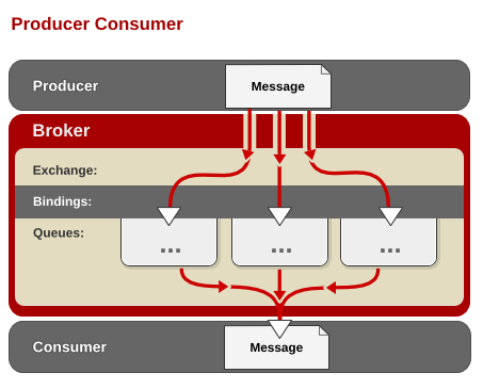
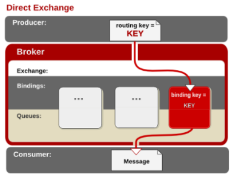

1 rabbit关键概念
1.1 rabbit内部概念说明

Message
消息，消息是不具名的，它由消息头和消息体组成。消息体是不透明的，而消息头则由一系列的可选属性组成，这些属性包括routing-key（路由键）、priority（相对于其他消息的优先权）、delivery-mode（指出该消息可能需要持久性存储）等。Publisher
消息的生产者，也是一个向交换器发布消息的客户端应用程序。Exchange
交换器，用来接收生产者发送的消息并将这些消息路由给服务器中的队列。Binding
绑定，用于消息队列和交换器之间的关联。一个绑定就是基于路由键将交换器和消息队列连接起来的路由规则，所以可以将交换器理解成一个由绑定构成的路由表。Queue
消息队列，用来保存消息直到发送给消费者。它是消息的容器，也是消息的终点。一个消息可投入一个或多个队列。消息一直在队列里面，等待消费者连接到这个队列将其取走。Connection
网络连接，比如一个TCP连接。Channel
信道，多路复用连接中的一条独立的双向数据流通道。信道是建立在真实的TCP连接内地虚拟连接，AMQP 命令都是通过信道发出去的，不管是发布消息、订阅队列还是接收消息，这些动作都是通过信道完成。因为对于操作系统来说建立和销毁 TCP 都是非常昂贵的开销，所以引入了信道的概念，以复用一条 TCP 连接。Consumer
消息的消费者，表示一个从消息队列中取得消息的客户端应用程序。Virtual Host
虚拟主机，表示一批交换器、消息队列和相关对象。虚拟主机是共享相同的身份认证和加密环境的独立服务器域。每个 vhost 本质上就是一个 mini 版的 RabbitMQ 服务器，拥有自己的队列、交换器、绑定和权限机制。vhost 是 AMQP 概念的基础，必须在连接时指定，RabbitMQ 默认的 vhost 是 / 。Broker
表示消息队列服务器实体。
1.2 rabbitmq中exchange的类型
AMQP 中增加了 Exchange 和 Binding 的角色。生产者把消息发布到 Exchange 上，消息最终到达队列并被消费者接收，而 Binding 决定交换器的消息应该发送到那个队列。

发送端(Publisher)只需要关注将消息内容发送到哪个交换器(exchange)以及要发送的绑定(Binding)是什么关键值即可。
接收端(Consumer)在启动的时候关注自己的队列(Queue)是哪个，以及绑定到哪个交换器(exchange)以及绑定(Binding)是什么。这样启动后就能获取对应的Publisher发送过来的消息。无论是发送端(Publisher)和 接收端(Consumer)谁先启动都会创建其对应的交换器(exchange)，注意消费端和发送端的exchange类型要保持一致不然先启动的创建后另一个再启动会报错。
exchange的类型
Exchange分发消息时根据类型的不同分发策略有区别，目前共四种类型：direct、fanout、topic、headers 。headers 匹配 AMQP 消息的 header 而不是路由键，此外 headers 交换器和 direct 交换器完全一致，但性能差很多，目前几乎用不到了，所以直接看另外三种类型：
direct

在使用同一个交换机下,消息中的路由键（routing key）如果和 Binding 中的 binding key 一致， 交换器就将消息发到对应的队列中。它是完全匹配、单播的模式。若每个消费者都启动一个队列去监听这个binding key就和另一种fanout效果一致,变相等效于广播形式。若想实现类似于消费组的功能(组内只有一个消费者收到消息)则可以使用同一个队列进行传递消息。
fanout

每个发到 fanout 类型交换器的消息都会分到所有绑定的队列上去。fanout 交换器不处理路由键，只是简单的将队列绑定到交换器上，每个发送到交换器的消息都会被转发到与该交换器绑定的所有队列上。无论生产者和消费则设置为什么都不会影响。很像子网广播，每台子网内的主机都获得了一份复制的消息。fanout 类型转发消息是最快的。
topic

topic 交换器通过模式匹配分配消息的路由键属性，将路由键和某个模式进行匹配，此时队列需要绑定到一个模式上。它将路由键和绑定键的字符串切分成单词，这些单词之间用点隔开。它同样也会识别两个通配符：符号“#”和符号“*”。#匹配0个或多个单词，*匹配不多不少一个单词。
生产者所有发送到Topic Exchange的消息会通过指定Routing Key被转发到能和其匹配的Queue上。
Exchange指定Routing Key将路由进行模糊匹配。可以使用通配符进行模糊匹配，符号“#”匹配多个单词（可以是零个），符号“*”匹配一个单词。因此“usa.#”能够匹配到“usa.news.xxx、usa.weather.xxx”，但是“usa.*” 只会匹配到“usa.news、usa.weather”。
1.3 消息发送接收流程
发送消息：
生产者和Broker建立TCP连接。
生产者和Broker建立通道。
生产者通过通道消息发送Broker，由Exchange将消息进行转发。
Exchage将消息转发到指定的Queue(队列)
接收消息：
消费者和Broker建立TCP连接
消费者和Broker建立通道
消费者监听指定的Queue
当有消息到达Queue时Broker默认将消息推送到消费者
消费者接收到消息
2. RabbitMq关键知识点
2.1 消息的持久性
虽然消费者被杀死，消息也不会被丢失。但是如果此时RabbitMQ服务被停止，我们的消息仍然会丢失。
当RabbitMQ退出或者异常退出，将会丢失所有的队列和信息，除非你告诉它不要丢失。我们需要做两件事来确保信息不会被丢失：我们需要给所有的队列和消息设置持久化的标志。
第一， 我们需要确认RabbitMQ永远不会丢失我们的队列。为了这样，我们需要声明它为持久化的。
复制
1 | boolean durable = true; |
注：RabbitMQ不允许使用不同的参数重新定义一个队列，所以已经存在的队列，我们无法修改其属性。
第二， 我们需要标识我们的信息为持久化的。通过设置MessageProperties（implements BasicProperties）值为PERSISTENT_TEXT_PLAIN
复制
1 | channel.basicPublish("", "task_queue",MessageProperties.PERSISTENT_TEXT_PLAIN,message.getBytes()); |
现在你可以执行一个发送消息的程序，然后关闭服务，再重新启动服务，运行消费者程序测试。
2.2 Confirm确认消息 Return返回消息
confirm消息确认机制
消息的确认：是指生产者投递消息后，如果Broker收到消息，则会给生产者一个应答
生产者进行接收应答，用来确定这条消息是否正常的发送到Broker，这种方式也是消息的可靠性投递的核心保障。
1
2
3
4
5
6
7
8
9
10
11
12
13
14//指定消息的投递模式：消息的确认模式
channel.confirmSelect();
//添加一个确认监听
channel.addConfirmListener(new ConfirmListener() {
public void handleAck(long deliveryTag, boolean multiple) throws IOException {
System.out.println("----handleAck---");
}
public void handleNack(long deliveryTag, boolean multiple) throws IOException {
System.out.println("----handleNack---");
}
});Return返回消息机制
某些情况下，如果我们在发送消息的时候，当前的exchange不存在或者指定的路由key路由不到，这时候如果我们需要监听这种不可达的消息，就需要使用Return Listener
在API中有个一重要配置项：
Mandatory:如果为true，则监听器会接收到路由不可达的消息，然后进行后续处理，如果为false，则broker端自动删除该消息。
1
2
3
4
5
6
7
8
9
10
11
12
13//添加return返回消息监听
channel.addReturnListener(new ReturnListener() {
public void handleReturn(int replyCode, String replyText, String exchange,
String routingKey, AMQP.BasicProperties properties, byte[] body) throws IOException {
System.out.println(replyCode);
System.out.println(replyText);
System.out.println(exchange);
System.out.println(routingKey);
System.out.println(properties);
System.out.println(Arrays.toString(body));
}
});
2.3 消费端限流场景
如果RabbitMQ服务上堆积了成千上万条未处理的消息，然后随便打开一个消费者客户端，巨量的消息瞬间被推送过来，但是单个客户端无法同时处理这么多消息，可能会导致服务器宕机，产生线上故障。
所以RabbitMQ提供了一种qos功能（服务质量保证），即在非自动确认消息的前提下，如果一定数目的消息（通过基于consume或者channel设置Qos的值）未被确认前，不进行消费新的消息。
二.BasicQos方法
void BasicQos(int prefetchSize,int prefetchCount,boolean global)
prefetchSize：消费端一般设置为0
prefetchCount：消费者同时接收消息的个数
global:true/false 是否将上面的设置应用于channel级别（是channel级别还是consumer级别）
prefetchCount和global这两项，rabbitmq没有实现，即在自动应答情况下这两个值是不生效的。
1 | public class Consumer { |
2.4 消费端ack与重回队列
主要的示例代码:
1 | boolean ack = false ; //打开消息应答机制 |
消费端ACK使用场景：
1.消费端进行消费的时候，如果由于业务异常我们可以进行日志记录，然后进行补偿。
2.由于服务器宕机等严重问题，那我们就需要手工进行ACK保障消费端消费成功。
生产者:
1 | public static void main(String[] args) throws IOException, TimeoutException { |
消费者:
1 | public static void main(String[] args) throws IOException, TimeoutException, InterruptedException { |
2.5 TTL队列/消息
TTL time to live 生存时间。
- 支持消息的过期时间，在消息发送时可以指定。
支持队列过期时间，在消息入队列开始计算时间，只要超过了队列的超时时间配置，那么消息就会自动的清除。
RabbitMQ支持消息的过期时间，在消息发送时可以进行指定
1
new AMQP.BasicProperties().builder().expiration("").build();
RabbitMQ支持队列的过期时间，从消息入队列开始计算，只要超过了队列的超时时间配置，那么消息会自动的清除。在声明队列的queueDeclare方法的arguments参数中设置。
2.6 死信队列
DLX：Dead Letter Exchange 死信队列
利用DLX，当消息在一个队列中变成死信（dead message）之后，它能被重新publish到另一个Exchange，这个Exchange就是DLX。
消息变成死信的情况：
消息被拒绝（basic.reject/basic.nack）,并且requeue=false
消息TTL过期。
队列达到最大长度。
DLX也是一个正常的Wxchange，和一般的Exchange没有区别，实际上就是设置队列的某一属性。
当这个队列中有死信时，rabbitmq就会自动将这个消息重新发布到设置的Exchange上去，进而被路由到另一个队列。
可以监听这个队列中消息做相应的处理，这个特性可以弥补RabbitMQ3.0以前支持的immediate参数的功能。
我们正常声明交换机、队列、绑定，只不过我们需要在队列上加一个参数即可，arguments.put(“x-dead-letter-exchange”,exchangeName),这样当有消息变成死信时，消息直接可以路由到该死信队列。
死信队列的设置
- 设置Exchange和Queue，然后进行绑定
- Exchange: dlx.exchange(自定义的名字)
- queue: dlx.queue（自定义的名字）
- routingkey: #（#表示任何routingkey出现死信都会被路由过来）
- 然后正常的声明交换机、队列、绑定，只是我们在队列上加上一个参数：arguments.put(“x-dead-letter-exchange”,”dlx.exchange”);
2.7 消息属性定义
1 | ### 生产者 |
2.8 消息的公平分配
或许会发现，目前的消息转发机制（Round-robin）并非是我们想要的。例如，这样一种情况，对于两个消费者，有一系列的任务，奇数任务特别耗时，而偶数任务却很轻松，这样造成一个消费者一直繁忙，另一个消费者却很快执行完任务后等待。
造成这样的原因是因为RabbitMQ仅仅是当消息到达队列进行转发消息。并不在乎有多少任务消费者并未传递一个应答给RabbitMQ。仅仅盲目转发所有的奇数给一个消费者，偶数给另一个消费者。
为了解决这样的问题，我们可以使用basicQos方法，传递参数为prefetchCount = 1。这样告诉RabbitMQ不要在同一时间给一个消费者超过一条消息。换句话说，只有在消费者空闲的时候会发送下一条信息。
1 | int prefetchCount = 1; |
3.rabbitmq运维
3.1 常用命令
启动监控管理器：rabbitmq-plugins enable rabbitmq_management
关闭监控管理器：rabbitmq-plugins disable rabbitmq_management
启动rabbitmq：rabbitmq-service start
关闭rabbitmq：rabbitmq-service stop
查看所有的队列：rabbitmqctl list_queues
清除所有的队列：rabbitmqctl reset
关闭应用：rabbitmqctl stop_app
启动应用：rabbitmqctl start_app
3.2 角色权限设置
用户和权限设置
添加用户：rabbitmqctl add_user username password
分配角色：rabbitmqctl set_user_tags username administrator
新增虚拟主机：rabbitmqctl add_vhost vhost_name
将新虚拟主机授权给新用户：rabbitmqctl set_permissions -p vhost_name username “.*” “.*” “.*”(后面三个”*”代表用户拥有配置、写、读全部权限)
角色说明
- 超级管理员(administrator)
可登陆管理控制台，可查看所有的信息，并且可以对用户，策略(policy)进行操作。 - 监控者(monitoring)
可登陆管理控制台，同时可以查看rabbitmq节点的相关信息(进程数，内存使用情况，磁盘使用情况等) - 策略制定者(policymaker)
可登陆管理控制台, 同时可以对policy进行管理。但无法查看节点的相关信息(上图红框标识的部分)。 - 普通管理者(management)
仅可登陆管理控制台，无法看到节点信息，也无法对策略进行管理。 - 其他
无法登陆管理控制台，通常就是普通的生产者和消费者。